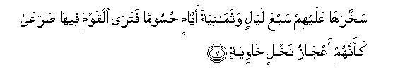
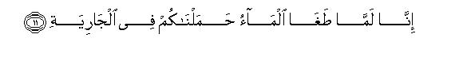
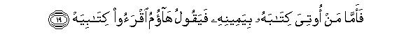
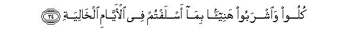
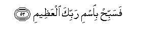

بسم الله الرحمن الرحيم
Sayyid Abul Ala Maududi - Tafhim al-Qur'an - The Meaning of the Qur'an
 69.
Surah Al Haaqqa (The Inevitable)
69.
Surah Al Haaqqa (The Inevitable)
The Surah takes its name from the word al-Haaqqah with which it opens.
This too is one of the earliest surahs to be revealed at Makkah. Its subject matter shows that it was sent down at the time when opposition to the Holy Prophet (upon whom be peace) had started but had not yet become tyrannical. Musnad Ahmad contains a tradition from Hadrat Umar, saying: "Before embracing Islam one day I came out of my house with a view to causing trouble to the Holy Prophet, but he had entered the Masjid al-Haram before me. When I arrived I found that he was reciting surah Al-Haaqqah in the Prayer. I stood behind him and listened. As he recited the Qur'an I wondered at its literary charm and beauty. Then suddenly an idea came to my mind that he must be a poet as the Quraish alleged. Just at that moment he recited the words: "This is the Word of an honorable Messenger: it is not the word of a poet." I said to myself: Then, he must be a soothsayer, if not a poet. Thereupon be recited the words:"Nor is it the word of a soothsayer: little it is that you reflect. It is a Revelation from the Lord and Sustainer of the worlds. On hearing this Islam entered deep into my heart." This tradition of Hadrat Umar shows that this surah had been sent down long before his acceptance of Islam, for even after this event he did not believe for a long time, and he continued to be influenced in favor of Islam by different incidents from time to time, till at last in the house of his own sister he came by the experience that made him surrender and submit to the Faith completely. (For details, see introduction to surah Maryam and Introduction to surah Al-Waqiah).
The first section (vv. 1-37) is about the Hereafter and the second (vv. 38-52) about the Qur'an's being a revelation from Allah and the Holy Prophet's being a true Messenger of Allah.
The first section opens with the assertion that the coming of the Resurrection and the occurrence of the Hereafter is a truth which has to take place inevitably. Then in vv. 4-12, it has been stated that the communities that denied the Hereafter in the past became worthy of Allah's scourge ultimately. In vv. 13-17 the occurrence of Resurrection has been depicted. In vv. 18-37 the real object for which Allah has destined a second life for mankind after the present worldly life has been enunciated. In it we are told that on that Day all men shall appear in the Court of their Lord, where no secret of theirs shall remain hidden each man's record will be placed in his hand. Those who had spent lives in the world with the realization that one day they would have to render an account of their deeds before their Lord, and who had worked righteously in the world and provided beforehand for their well being in the Hereafter, will rejoice when they see that they have been acquitted and blessed with the eternal bliss of Paradise. On the contrary, those who neither recognized the rights of Allah, nor discharged the rights of men, will have no one to save them from the punishment of Allah, and they will be cast into Hell.
In the second section (vv. 38-52) the disbelievers of Makkah have been addressed and told: "You think this Qur'an is the word of a poet or soothsayer, whereas it is a Revelation sent dawn by Allah, which is being presented by the noble Messengers. The Messenger by himself had no power to increase or decrease a word in it. If he forges something of his own composition into it, We will cut off his neck-vein (or heart- vein). For this is the Truth absolute and pure: and those who give it a lie, will have ultimately to regret and repent.
In the name of Allah, the Compassionate, the Merciful.

[1-3] The Inevitable!1 What is the Inevitable? And what do you know what the Inevitable is?2

[4-8] Thamud3 and `Ad belied the coming of the sudden calamity.4 Thamud were destroyed by a violent catastrophe5 As for `Ad, they were destroyed by a furious windstorm; Allah imposed it on them for seven nights and eight days continuously. (Had you been there) you would have seen them lying prostrate as though they were hollow trunks of palm trees. Now do you see any of them still surviving?
[9-10] And the same great crime did Pharaoh and the people before him and the overturned settlements6 commit. They all disobeyed the Messenger of their Lord and He seized them with a terrible grip.

[11-12] When the Flood waters rose abnormally high,7 We boarded you in the Ark,8 that We may make the event a warning for you and that the retaining ears may retain its memory.9
[13-18] Then,10 when the Trumpet is blown once, and the earth and the mountains are razed and crushed into pieces with a single stroke, on that Day shall the Inevitable happen. On that Day the heaven shall split asunder, and its system shall loosen. The angels shall be on its sides and eight of them on that Day shall be upholding the Throne of your Lord, above them.11 That will be the Day when you will be brought forth: no secret of yours will remain hidden.


[19-24] Then whoso is given his record in his right hand,12 shall say: "Look! Read my record.13 I knew that! would certainly be getting my account,"14 So he shall be in a state of bliss, in a high Garden, whose clusters of fruit shall be hanging within easy reach. (To such people it will be said) "Eat and drink with relish as a reward for the deeds you did in the days gone by."


[25-37] As for him whose record is given in his left hand,15 he will say: "Would that I had not been given my record16 nor known what my account was.17 Would that the death (that I suffered in the world) were final.18 Today my wealth has availed me nothing, and I am robbed of all my power.19 (It will be ordered:) "Seize him and chain him by the neck, then cast him into Hell, then fasten him in a chain seventy cubits long. For he did not believe in Allah, the Most High, nor urged the feeding of the poor.20 So, he has neither any true friend here today nor any food except the corruption from the washing of wounds, which none but the sinners eat.



[38-52] Not so!21 I swear by those things which you see and also by those which you do not see, that this is the Word of an honorable Messenger.22 It is not the word of a poet: little it is that you believe.23 Nor is it the word of a soothsayer: little it is that you reflect. It is a Revelation from the Lord of the worlds.24 And if this (Prophet) had forged something himself and ascribed it to Us, We would indeed have seized him by his right hand, and cut off his neck-vein. Then none of you could have withheld (Us) from this.25 This indeed is an Admonition for the righteous.26 And We know that there are some among you who deny it. For such disbelievers it is indeed a cause of despair.27 And surely this is the absolute truth. So, glorify, O Prophet, the name of your Lord, the Great.
1The word al-Haaqqah as used in the Text means an event which has inevitably to take place and the occurrence of which in the future is so certain as to admit of no doubt or suspicion. To use this word for Resurrection and to begin the discourse with it by itself shows that the people were denying its occurrence. They are being told: "That which you are denying is inevitable: your denial will not prevent its occurrence."
2These two questions, one after the other, have been put to arouse the listeners, to make them understand the importance of the the me and listen to what follows with full attention.
3As the disbelievers of Makkah denied Resurrection and took the news of its coming lightly, they have been warned at the outset, as if to say: "Resurrection is inevitable: whether you believe in it; or not, it will in any case take place. Then, they are told: "It is not a simple and ordinary thing that a person accepts the news of the coming of an event, or not, but it has a deep relationship with the morals of the nations and with their future. The history of the nations, which lived before you, testifies that the nation which refused to believe in the Hereafter and thought this worldly life only to be the real life and denied that man would have ultimately to render an account of his deeds before God, corrupted itself morally until the punishment of God overtook it and eliminated it from the world."
4The word al-qari ah is derived from qar', which means to hammer, to beat, to knock and to strike one thing upon the other. This other word for Resurrection has been used to give an idea of its terror and dread.
5In Surah Al-A'raf: 78, it has been called ar-rajfah (a terrible earthquake); in Surah Hud: 67 as-sayhah (a violent blast); in Surah Ha Mim As-Sajdah: 17, it has been said: "They were overtaken by sa`iqa-tul-'adhab (a humiliating scourge); and here the same punishment has been described as at-taghiyah (a violent catastrophe). These words describe different aspects of the same calamity.
6The reference is to the towns and settlements of the people of the Prophet Lot, about which it has been said in Surah Hud: 82 and AI-Hijr: 74: "We turned them upside down. "
7The illusion is to the Deluge of the Prophet Noah, in which a whole nation was drowned because of this very crime, and only those people were saved, who had listened to and obeyed the Messenger of Allah.
8"We boarded you...", because the whole human race that exists today has descended from the people who were boarded in the Ark thousands of years ago and thus saved from the Deluge. It means: "You exist in the world today because in that Deluge Allah had caused only the infidels to be drowned and had saved the believers.
9"The retaining ears,..": the ears which may hear it consciously and take it in. Although the word ear has been used, it implies the hearers who may hear the event and always remember it, take heed from it, and may never forget what dreadful fate the deniers of the Hereafter and the disbelievers of the Messenger of God would ultimately suffer.
10While reading the following verses one should keep in mind that at some places in the Qur'an the three stages of Resurrection which will occur one after the other at different times have been mentioned separately, and at others all the three have been combined and mentioned as a single event. For example, in Surah An-Naml: 87 the first blowing of the Trumpet has been mentioned, when everyone will be suddenly struck with terror. At that time they will witness the general confusion and the upsetting of the order of the universe, as described in Al-Hajj: 1-2, Ya Sin 49-50 and At-Takvir: 1-6. In Surah Az-Zumar: 67-70, mention has been made of the second and third blowing of the Trumpet. On the second blowing of it everyone will fall down dead, and when it is blown for the third time, all dead men will rise back to life and present themselves before Allah. In Ta Ha: 102-112, AI-Anbiya': 101-103, Ya Sin: 51-53 and Qaf: 20-22, only the third sounding of the Trumpet has been mentioned. (For explanation, see E.N. 78 of Ta Ha, E.N. 1 of AI-Hajj. E.N.'s 46, 47 of Ya Sin). But here and at many other places in the Qur'an all the events of Resurrection, from the blowing of the first Trumpet till the people's entry into Heaven and Hell, have been described as a single event.
11This is ambiguous verse the meaning of which is difficult to determine We can neither know what the Throne is nor can understand what will be the nature of the eight angels upholding it on the Day of Resurrection. It is, however. inconceivable that Allah Almighty would be sitting on the Throne and the eight angels would be upholding it along with Him The verse also does not say that Allah at that time would be sitting on the Throne. Besides, the conception of God that the Qur'an gives also prevents one from imagining that the Being Who is free from physical existence as to body, direction and place, should be residing some where and His creatures should sustain Him. Therefore, pursuing any research to determine its meaning would be tantamount to disbelief. However, one should understand that in order to give an idea of Allah Almighty's rule and sovereignty, and of the matters associated with it, the same scene has been depicted by the Qur'an as of worldly kingship and the same terms have been used for it as are common for kingship and its accompaniments, to enable us to understand matters pertaining to sovereignty of the universe to some extent only by means of this very scene and terms. All this is meant to bring the real Truth within human understanding; it is not, therefore, right to take it literally.
12The record's being given in the right hand will by itself show that the concerned person's account is clear and settled and he is appearing in the Divine Court as a righteous man and not as a culprit. It is probable that at the time the records are distributed the righteous man himself will extend his right hand forward to receive his record. For on account of the good treatment that he would have received right from the moment of death till his appearance in the Plain of Assembly at Resurrection, would have given him the satisfaction that he was there to be blessed and not to be punished. At many a place in the Qur'an it has been explicitly stated that right at death itself it becomes clear to every man whether he is entering the next World in a blessed or wretched state. Then from the moment of death till Resurrection the righteous man is treated like a guest and the evil man as a culprit under custody. After this, froth the time the second life starts on the Day. of Resurrection, the condition and state of the righteous is entirely different from the condition and state of the disbelievers, hypocrites and culprits. (For details, see Al-Anfal: 50, An-Nahl: 28-32, Bani Isra'il: 97, Ta Ha: 102, 103, 124126, AI-Anbiya': 1-3, Al-Furgan: 24, An-Naml: 89, Saba: 51, Ya Sin: 26-27, AlMu'min 45-46, Muhammad: 27. Qaf: 19-23 and the corresponding Notes.
13That is, he will be overjoyed as soon as he receives his record and will show it to his companions. In Surah Al-lnshiqaq: 9, it has been said "He will return to his kinsfolk rejoicing."
14That is, "He was fortunate because he had been conscious of the Hereafter in the world and had lived his life with the belief that he would have to appear before God one day and render his account to Him.
15In Surah Al-Inshiqaq it has been said: "And the one whose record is given him behind his back..." Probably it will be like this: As the culprit would already be knowing that he was a culprit, and would be aware of what his record contained, he would dejectedly extend his left hand forward to receive it, and then would immediately hide it behind his back so that no one else saw what he had received.
16That is, "I should not have been given this record in the Plain of Assembly and thus publicly disgraced before all mankind, but should have been awarded secretly whatever punishment I deserved.”
17That is, "I should not have been told what I had done in the world." Another meaning of this verse also can be: "I never knew what an account was: I never had imagined that one day I would also have to render my account and that all my deeds would be presented before me."
18That is, "I should have become extinct after death in the world and should have experienced no other life after death."
19The word sultan of the Text is used both for an argument and for power and authority. If it is taken in the sense of an argument, the meaning would be: "The arguments that I used to give would not work here: here, I have no argument which I can present in self-defense." And if it is taken in the sense of power, it would imply: "The power of which I was so proud in the world is no more: I have no army here and there is none to obey me: I stand as a miserable, helpless creature, who can do nothing to defend himself."
20That is, not to speak of feeding a poor man himself, he did not even like to say others that they should feed the hungry.
21That is, the truth is not as you think it to be.
22Here, "an honorable Messenger" implies the Holy Prophet Muhammad (upon whom be Allah's peace and blessings) and in Surah At-Takwir: 19. the angel Gabriel (peace be on him), the argument being that after describing the Qur'an as the Word of an honorable Messenger, it has been said: "It is not the word of a poet ... nor of a soothsayer," and obviously the disbelievers of Makkah branded the Holy Prophet Muhammad (upon whom be Allah's peace and blessings) and not Gabriel as a poet and soothsayer. On the contrary, in Surah At-Takwir, after describing the Qur'an as the word of "a noble messenger" it has been said: "That Messenger has great power, and has high ranks with the Owner of the Throne: there he is obeyed and held as trustworthy ... And Muhammad (upon whom be Allah's peace and blessings) has seen him on the bright horizon." (vv. 20-23). Almost the same thing has been stated in An-Najm: 5-10 about Gabriel.
Here, the question arises; In what sense has the Qur'an been described as the Word of Muhammad (upon whom be Allah's peace and blessings) and of Gabriel? The answer is: the people were hearing it being recited by the tongue of the Holy Prophet and the Holy Prophet by the tongue of Gabriel. Thereupon, in one way it was the word of the Holy Prophet and in another way of Gabriel, but a little below it has been explicitly stated: "It is indeed a Revelation from the Lord of the worlds,” which is being presented before Muhammad (upon whom be Allah's peace and blessings) by , the tongue of Gabriel (peace he on him) and before the people by the tongue of Muhammad (upon whom be Allah's peace and blessings). The word Messenger itself points to the truth that the Word belongs to neither of them but they have presented it as Messengers of the One Who has sent it down.
23One meaning of "little it is that you believe", according to Arabic idiom, can be: "You do not believe it at all." Another meaning also can be: "Hearing the Qur'an your heart sometimes itself cries out: 'This cannot be mortal word'. Yet you behave stubbornly and refuse to believe in it.
24In short: "I swear by whatever you see and by whatever you do not see that this Qur'an is not the word of a poet or a soothsayer, but it is a Revelation from the Lord of the worlds, which is being presented by the Messenger who is noble and gentle." Let us now consider in what sense this oath has been sworn. That which was visible to the people was:.
(1) This Word was being presented by a person who being noble and gentle was not hidden from anybody in the society of Makkah. Everyone knew that he was the best man of their nation in conduct. It could not be expected of such a man that he would forge a lie and attribute it to Allah, Lord of the worlds.
(2) They also saw clearly that he had no selfish motive in presenting that word before the people, but had rather sacrificed all His personal interests to it: had ruined his business, had abandoned every ease and comfort, was being cursed and abused by the same people who had shown him the highest veneration and esteem and had caused even his family and children to be subjected to these agonies besides himself. A person having selfish motives could not have submitted himself to such tribulations.
(3) They could also see that the lives of the people in their own society, who believed in him, underwent a sudden transformation. The word of no poet or soothsayer has been known to have brought about such a wonderful moral change in the people that his follower should become ready to face every hardship and bear up against every persecution for his sake.
(4) They were also not unaware of the language of poetry and the diction of the soothsayers. Apart from stubborn disbelievers, no one could say that the language of the Qur'an was the language of poetry or sorcery. (For a detailed discussion of this, see E.N. 7 of AI-Anbiya', E.N.'s 142-145 of Ash-Shu`ara', E.N.22 of At-Tur).
(5) This also was before their eyes that no one in entire Arabia was so eloquent of speech that his word could be brought to match with the Qur'an. Not to speak of equaling it, not even the greatest poet's eloquence could even approach anywhere near the Qur'an's.
(6) This also was not hidden from them that the language used by Muhammad (upon whom be Allah's peace and blessings) himself was very different in its literary beauty and merit from the language of the Qur'an. No Arabic speaking person could, after hearing the Holy Prophet's own speech, and the Qur'an, say that both emanated from one and the same person.
(7) The people of Makkah had never heard even until a day before Muhammad (upon whom be Allah's peace and blessings) made the claim to Prophethood anything relating to the themes that the Qur'an consisted of, nor they knew that he had any means of obtaining that knowledge and information. That is why even if his opponents alleged that he obtained that information secretly from somewhere, no one in Makkah was prepared to believe it. (For explanation, see E.N l07 of An-Nahl and E.N. 12 of AI-Furgan).
(8) They could also see the wonderful workshop of existence, from the earth to the heavens, which was functioning before their eyes, and in which they could see a supreme, wise law and, an all-pervading order and system at work. In it they could see no sign and evidence of the polytheism and denial of the Hereafter, which the Arabs had adopted as their creed, but there were signs and proofs of the existence of One God and of the truth of the Hereafter which the Qur'an was presenting.
All this they could see, and what they did not see was: Allah Almighty alone is the Creator and Master and Ruler of this universe: all others are only creatures: none beside Him is God! Resurrection has to take place inevitably; Muhammad (upon whom be Allah's peace and blessings) has really been appointed a Messenger by Allah Himself Who is sending down the Qur'an to him. An oath has been sworn by both truths to affirm that which has been stated in the preceding verses.
25The object is to impress the point that the Prophet has no authority whatever to make any change in the Revelation. If he did so, he would be severely punished. The style depicts the prompt and quick action of a king who strikes off the head of an official, holding him by the hand, if he commits a forgery in his name. Some people have misconstrued this verse to mean that if the heart-vein or neck-vein of an impostor is not immediately severed by Allah, it would be a proof that he was a true prophet, whereas in this verse what has been said is about a true prophet and not about the impostors. Same impostors have even claimed to be God and have thrived and lived long lives in the world, so it could not be a proof of the truth of their claim. For a full discussion of this question, see E.N 23 of Surah Yunus.
26That is, the Qur'an is an admonition for those who wish to avoid wrongdoing and its evil consequences. (For explanation, see E.N. 3 of Al-Baqarah).
27That is, they will ultimately have to despair and regret as to why they had rejected this Qur'an.